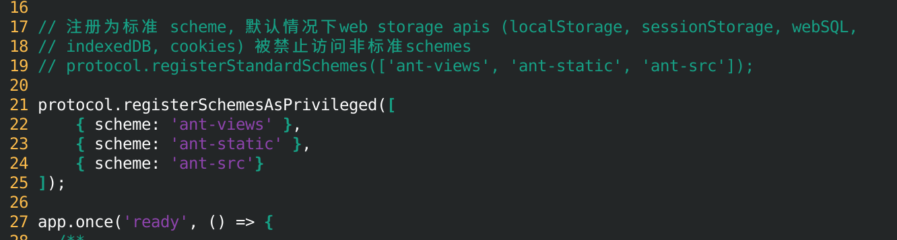
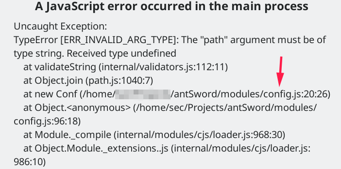
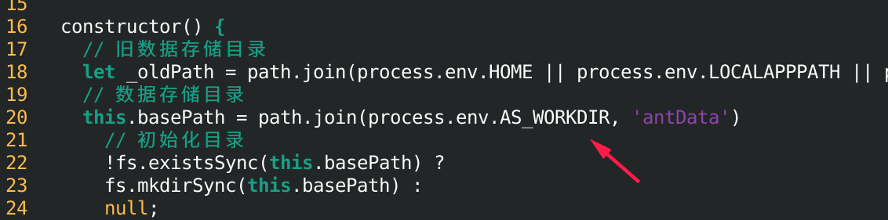
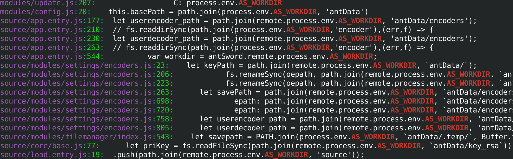
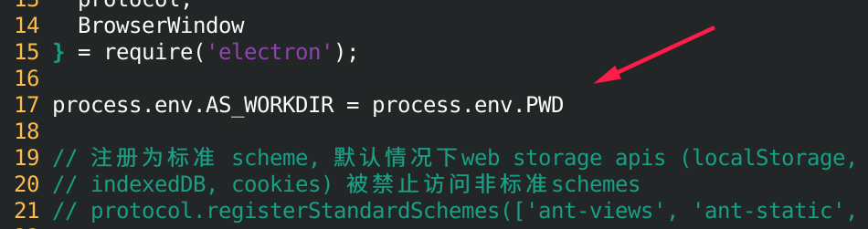
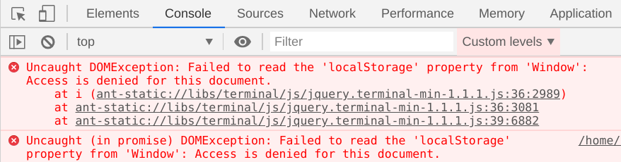
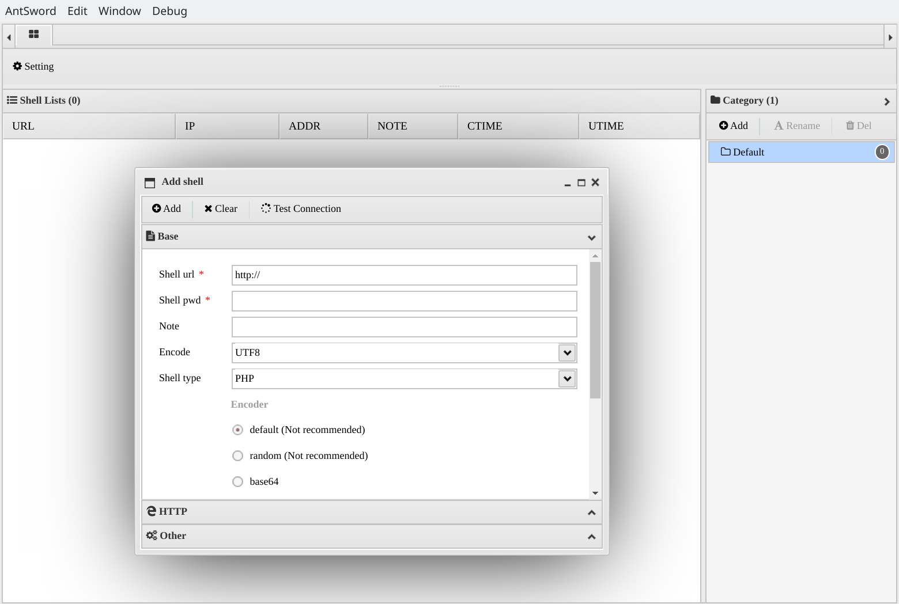

安装环境
- Kali Linux 2020.1
- antSword v2.1.8.1
加载器安装
antSword 从v2.0.0-beta版本开始引入加载器，只需要下载对应平台的加载器，无需安装额外的环境，可直接运行当前最新的开发版和发行版源代码。
具体操作步骤见官方文档：
https://github.com/AntSwordProject/AntSword-Loader
源代码安装
没有加载器，直接下载源码在Kali环境安装，是需要修改一些地方才能正常使用的。
源码下载
直接git clone最新版本(当前为v2.1.8.1)到当地目录。
1 | $ git clone https://github.com/AntSwordProject/AntSword.git |
因为系统nodejs版本比较新，electron等包可能会有不兼容的情况，为了偷懒，我把node_modules目录直接删了，重新安装最新的，出现问题再作修改，以下操作默认在antSword目录进行。
1 | $ rm -rf node_modules/ |
不太长版
修改package.json里的版本号2.8.1.1为2.8.1和scripts的start修改为electron app.js
修改app.js，将protocol.registerStandardSchemes(['ant-views', 'ant-static', 'ant-src']);替换为：
1 | process.env.AS_WORKDIR = process.env.PWD |
然后执行命令：
1 | $ ncu -u # 更新依赖包 |
问题排除版
环境准备
没有nodejs环境和npm命令的先安装。
1 | sudo apt install npm nodejs |
安装依赖包
先将package.json里的dependencies依赖包版本更新：
1 | $ ncu -u |
执行npm install是会出现这样情况：
1 | $ npm install |
版本号太长报警告，这时需要修改下package.json的版本号，将2.1.8.1修改为2.1.8，如果依赖包没安装成功的再执行一次npm install。
接着安装Electron：
1 | $ npm install electron |
官方源速度可能会比较慢，可能会直接卡在node install.js很久，可以直接taobao源加速：
1 | ELECTRON_CUSTOM_DIR=8.0.0 npm install electron@8.0.0 --electron_mirror=https://npm.taobao.org/mirrors/electron/ |
指定ELECTRON_CUSTOM_DIR是因为默认目录是v8.0.0，而taobao源是8.0.0
npm start
1 | $ npm start |
因为启动配置是基于加载器，如果直接npm start是会报错的，这时找到package.json下面这里：
1 | "scripts": { |
修改为：
1 | "scripts": { |
再次npm start：
1 | $ npm start |
修改下权限：
1 | sudo chown root:root ./node_modules/electron/dist/chrome-sandbox |
registerStandardSchemes & registerSchemesAsPrivileged
再次执行npm start，这是可以看到GUI了，但弹了个错误窗口：
1 | $ npm start |
由于我安装的E是v8.0.0版本，新版本已经移除registerStandardSchemes，改为registerSchemesAsPrivileged，这时需要修改一下app.js里的相应代码：
1 | protocol.registerStandardSchemes(['ant-views', 'ant-static', 'ant-src']); |
大概19行，修改为：
1 | protocol.registerSchemesAsPrivileged([ |

AS_WORKDIR
再次npm start，又弹出个错误框：

找到modules/config.js报错那行：

由于没有使用加载器，AS_WORKDIR默认是空的，所有报错了，整个目录搜索一下：
1 | $ grep --color -irn AS_WORKDIR |

挺多地方用到，为了偷懒，在app.js 入口这里直接指定当前目录：
1 | process.env.AS_WORKDIR = process.env.PWD |

为了方便，在窗口初始化的时候打开控制台， 在app.js找到以下这行，去掉注释或直接另起一行：
1 | // 打开调试控制台 mainWindow.webContents.openDevTools(); |
localStorage
再次npm start，继续报错：
1 | Uncaught DOMException: Failed to read the 'localStorage' property from 'Window': Access is denied for this document. |

数据被保护不给写，这时要回到app.js修改之前的registerSchemesAsPrivileged，添加参数：
1 | privileges: { standard: true } |
修改后：
1 | protocol.registerSchemesAsPrivileged([ |
再次npm start启动，看到熟悉的界面了：

启动脚本
antSword.sh
1 | #! /bin/bash |
1 | $ chmod +x antSword.sh |
由于更新了依赖包版本，会有一些比如setTemplateImage、ignoreHTTPS之类的函数会提示废弃或不存在，发现自个改改就好了。